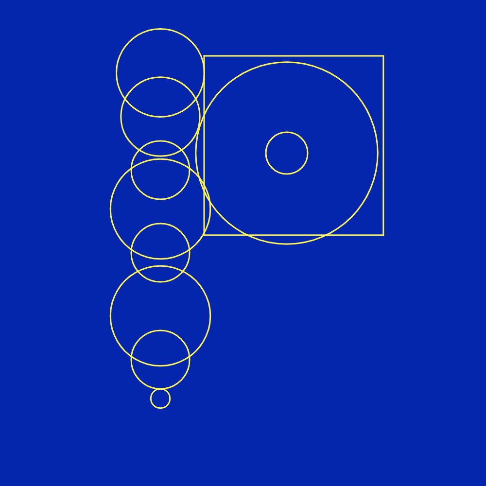
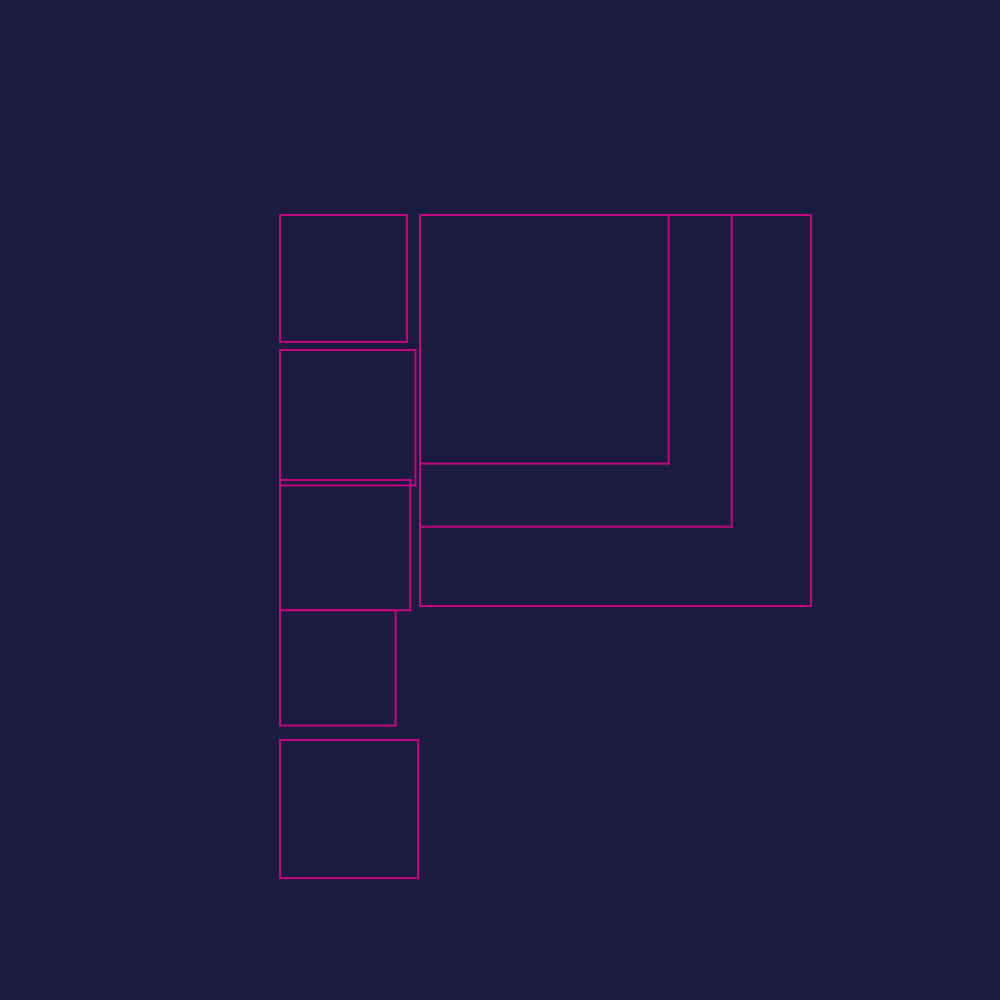
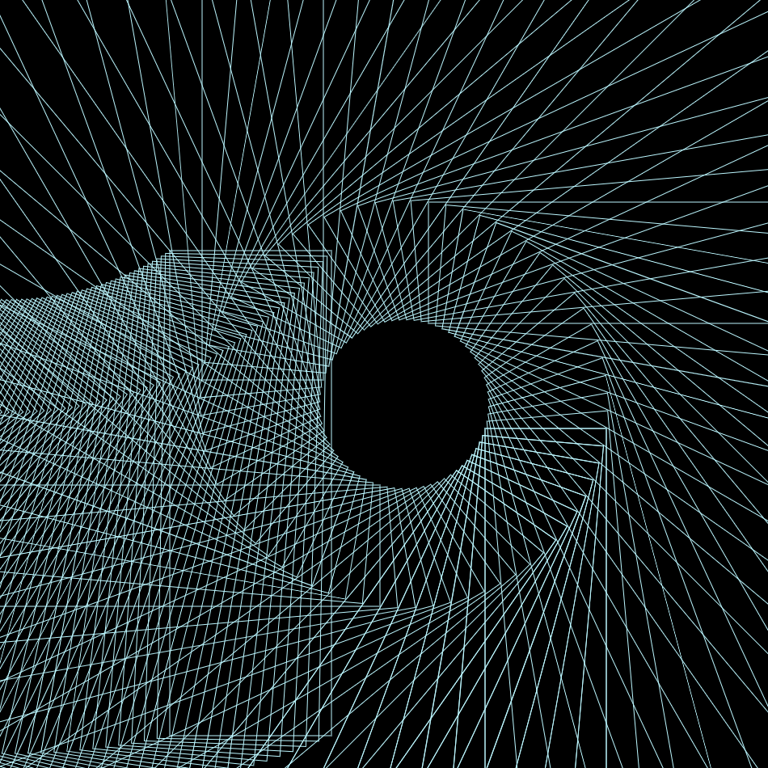

<!DOCTYPE html>
<html>
<head>
	<meta charset="utf-8">
	<meta name="viewport" content="width=device-width, initial-scale=1">
	<title>PARAMECTRICS AND GENERATION</title>
	<link rel="stylesheet" href="css/style.css">
</head>
<body>

</body>
</html>


<h6><p style="color:rgb(255,255,255);"> ASSIGNMENT II</p></h6>


<body style="background-color:rgba(0,0,0) ";>
<h3><p style="color:rgb(255,255,255);"><font>GENERATIVE TYPOGRAPHY</h3> 


<center></center>


<h5><p style="color:rgb(255,255,255);"> intent</p></h5>

<p><h4>
for this assignment, i was tasked to develop 21 daily code sketches through p5 using the letter 'p'. i started experimenting with rudimentary shapes in various sizes, sequences and colours.
</p></h4>


<center></center>


<h5><p style="color:rgb(255,255,255);"> process</p></h5>

<p><h4>
during my process, i started experimenting with various shapes within the elements of colour, placement and scale. as this was my first time working with html & css coding, many of my completed sketches are not as comprehensive and developed as i wished, but i am still happy with the selected designs submitted.
</p></h4>


<center></center>

<p>✿✿✿✿✿✿</p>
<p>✿✿✿✿✿✿</p>
<p>✿✿✿✿✿✿</p>
<p>✿✿✿✿✿✿</p>

